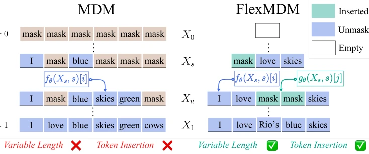
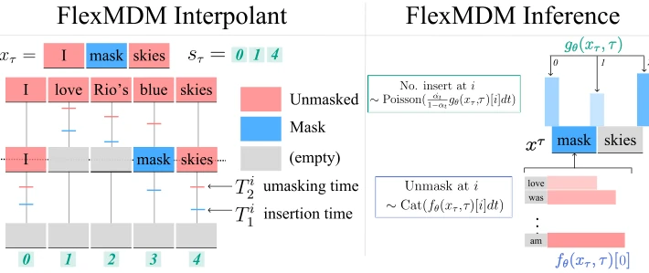
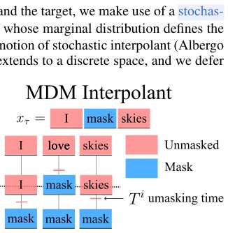
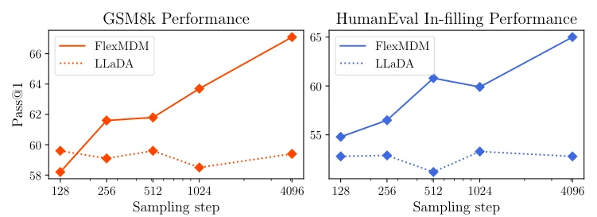

This paper performs a "plastic surgery" on Masked Diffusion Models (MDMs). Previous MDMs, while capable of parallel generation and arbitrary order, were locked by "fixed length"; generating variable-length sequences relied on padding or truncation, appearing somewhat clumsy and limiting application in complex tasks. FlexMDM attempts to break this shackle, introducing an insertion mechanism allowing the model to "insert" new words like humans, achieving true variable-length generation. Although the theoretical framework is rigorous, employing continuous-time Markov chains, it is essentially text generation and still distant from true embodied intelligence (such as robot control), as no action space is observed. However, being able to quickly convert an 8B MDM into FlexMDM and improve math and code capabilities, this cost-performance ratio is indeed high, at least proving the feasibility of variable-length diffusion and giving a strong shot of adrenaline to the discrete diffusion field.
研究动机Motivation
现有 MDMs (Shi et al., 2024; Sahoo et al., 2024) 在离散域生成上表现优异，支持任意顺序并行推理，显著快于自回归模型。然而，它们存在致命缺陷：无法处理变长序列，生成过程中不能插入新 token。这导致在规划（planning）或代码补全等任务中，模型必须预先分配固定位置，难以适应动态长度需求。例如 Nie et al. (2025) 的 LLaDA 虽扩展了规模，但仍受限于固定长度假设。人类生成文本时是灵活插入和删除的，而非填充固定槽位。因此，如何在保留 MDM 任意顺序优势的同时，支持变长生成和 token 插入，成为关键问题。现有工作如 Wu et al. (2025a) 尝试了辅助 token，但缺乏理论保证。
Existing MDMs (Shi et al., 2024; Sahoo et al., 2024) perform excellently in discrete domain generation, supporting arbitrary-order parallel inference, significantly faster than autoregressive models. However, they suffer from critical limitations: they cannot handle variable-length sequences and cannot insert new tokens during generation. This results in tasks such as planning or code completion requiring models to pre-allocate fixed positions, making it difficult to adapt to dynamic length requirements. For instance, although LLaDA by Nie et al. (2025) expanded the scale, it remains constrained by the fixed-length assumption. Humans generate text by flexibly inserting and deleting, rather than filling fixed slots. Therefore, how to support variable-length generation and token insertion while retaining the arbitrary-order advantage of MDMs becomes a key problem. Existing work such as Wu et al. (2025a) attempted auxiliary tokens but lacked theoretical guarantees.

Figure 1: Flexible Masked Diffusion Model (FlexMDM) addresses MDMs’ inability to handle variable-length sequences and token insertion while preserving any-order generation power. At each step, FlexMDM performs insertion and unmasking by predicting the expected number of mask tokens to insert (gθ) and the posterior over clean tokens (fθ), respectively.
FlexMDM is based on the continuous-time Markov chain (CTMC) and stochastic interpolants framework. The core innovation is the proposal of a "joint interpolant". Traditional MDMs focus only on unmasking, whereas FlexMDM adds an "insertion expectation". The model comprises two heads: fθ predicts the posterior distribution of clean tokens, and gθ predicts the expected number of mask tokens to be inserted between adjacent tokens. During training, distribution paths are defined via two scheduling functions (insertion α and unmasking β), starting from an empty string, gradually inserting masks and then removing masks to restore clean sequences. During inference, τ-leaping discretized CTMC is adopted, supporting arbitrary-order unmasking. Theoretical proof shows that as long as the true posterior is used, arbitrary-order sampling still converges to the target distribution. This design enables the model to dynamically adjust sequence length while maintaining the efficiency of parallel inference, without requiring retraining of the entire architecture.

Figure 3: Left (FlexMDM interpolant). To draw a sample xt, one can equivalently draw a sample x1 ∼p1, and for each token unmask, mask, or remove it according to the unmasking and insertion times (T i 1, T i 2). An auxiliary interpolant st gives closed-form expressions for the FlexMDM rate matrices. Right (FlexMDM Inference). Learned unmasking posterior and insertion expectation are later used at inference.
Experiments cover text pre-training, planning tasks, and large-scale fine-tuning. On OpenWebText, the fit of FlexMDM's length distribution significantly outperforms MDM, with comparable perplexity. In the synthetic maze planning task, FlexMDM's success rate is approximately 60% higher than MDM, with obvious advantages especially in multi-subgoal scenarios. The most notable aspect is scaling: fine-tuning LLaDA-8B from MDM to FlexMDM requires only 3 days (16 H100), with math (GSM8K) improving from 58% to 67% and code completion (HumanEval) from 52% to 65%. Ablation studies indicate that the insertion expectation module is crucial for variable-length modeling. Results demonstrate that this method significantly enhances flexibility while maintaining performance, supports rapid migration from pre-trained MDMs, and reduces deployment costs.
其他图片Other Figures

Figure 2: To draw a sample xt, one can equivalently sample the clean sequence x1 ∼ p1, draw unmasking times, and then accord- ingly unmask or mask each coordinate’s to- ken.

Figure 5: FlexMDM performance exhibits superior scaling when more sampling steps are allocated.